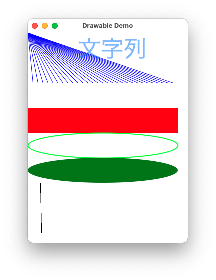
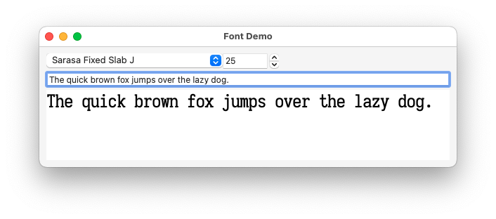
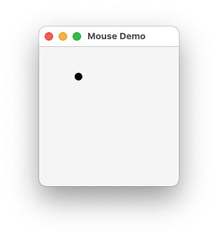
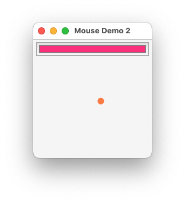
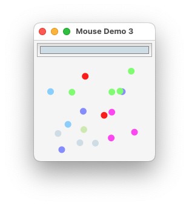

Drawableコントロール
Eto.Forms の Drawable コントロールを利用することで，直線，矩形，楕円，文字列等いろんなものをコントロールに自由に描画できる．
そのためには，以下のようにDrawableのPaintイベントを購読（ハンドラを登録）するとよい．
// MainForm.cs
using System;
using Eto.Forms;
using Eto.Drawing;
// テンプレート作成時にプロジェクト名を DrawableDemo にしたことを想定（以後同様の説明を省略）
// このnamespaceは，「〜.Gtk」等にある Program.cs においても利用されるので変更するとそちら（3箇所）も変更する必要がある．
namespace DrawableDemo
{
public class MainForm : Form
{
public MainForm()
{
Title = "Drawable Demo";
ClientSize = new Size(320, 420);
Drawable drawable = new Drawable();
// Paintを購読
// (s,pe) => { ... } の部分はPaintイベントが発生したときに呼ばれる処理であることに注意する．
// この時点でコントロールの中身がその部分の通りに描画されるわけではない．
drawable.Paint += (s, pe) =>
{
Graphics g = pe.Graphics;
Console.WriteLine(Size);
g.Clear(Colors.White);
// 50 px 幅の格子を描く
for (int x = 0; x < this.Size.Width; x += 50)
{
g.DrawLine(Colors.LightGrey, new Point(x, 0), new Point(x, drawable.Size.Height));
}
for (int y = 0; y < this.Size.Height; y += 50)
{
g.DrawLine(Colors.LightGrey, new Point(0, y), new Point(drawable.Size.Width, y));
}
for (int i = 0; i < 300; i += 10)
{
// 指定のペン，始点，終点で線を描く
g.DrawLine(new Pen(Colors.Blue), new Point(0, 0), new Point(i, 100));
}
// 矩形のアウトラインを描く
g.DrawRectangle(Colors.Red, new RectangleF(new PointF(0, 100), new SizeF(300, 50)));
// Colors.Red と書くかわりに Color.FromRgb(0xFF0000) で陽にRGBを指定できる
g.FillRectangle(Color.FromRgb(0xFF0000), new RectangleF(new PointF(0, 150), new SizeF(300, 50)));
// 楕円のアウトラインを描く．Colors.Lime は Color.FromRgb(0x00FF00) と同じ色
g.DrawEllipse(new Pen(Colors.Lime, 2F), new RectangleF(new PointF(0, 200), new SizeF(300, 50)));
// 内部が塗られた楕円を描く．Colors.Green は暗めの緑
g.FillEllipse(Colors.Green, new RectangleF(new PointF(0, 250), new SizeF(300, 50)));
// システムのデフォルトフォント，サイズ 50pt
Font f = new Font(SystemFont.Default, 50);
// テキストを指定フォントで指定座標（左上点）に描く．
g.DrawText(f, Color.FromArgb(0, 0x80, 0xff, 0x80), new Point(100, 0), "文字列");
// PointFやRectangleFのFはfloatのF．以下はどのように表示されるかな？
// ディスプレイ（Retinaとか）によってはアンチエイリアスもかからない．
for (int i = 0; i < 5; i++)
{
PointF start = new PointF(25F + 0.5F * i, 300 + 20 * i);
PointF end = start + new PointF(0, 20);
g.DrawLine(new Pen(Colors.Black, 1F), start, end);
}
};
// Mac環境のワークアラウンド．
// Drawableの最初のPaint時にSizeが値が正しくない https://github.com/picoe/Eto/issues/2104
//
// Eto.Forms 2.6.1においては，GtkでもSizeがワンテンポ遅れて変化したりする（https://github.com/picoe/Eto/issues/1752）ので
// 現状ではSizeに依存するコードはかかないほうがよいかもしれない．
//
// Invalidate()はコントロールに再描画を促す（結果，Paintイベントを発生させる）．
drawable.SizeChanged += (s, e) => drawable.Invalidate();
Content = drawable;
Menu = new MenuBar();
}
}
}上記のMac（非Retinaディスプレイでの表示）での実行例（DPIの違いからWindowsだと「文字列」の部分の大きさが変わる）．

上で使用したGraphicsのメソッドとその関連メソッド．
Clear(Color) |
描画領域を指定された色でクリアする． |
DrawLine(Color,PointF,PointF) |
指定された色で，与えられた始点から終点まで線を引く．なお，PointはPointFへ暗黙に型変換可能． |
DrawLine(Pen,PointF,PointF) |
指定されたペンで，与えられた始点から終点まで線を引く．Penは色の他にたとえば太さの情報を持つ． |
DrawRectangle(Color, RectangleF) |
指定された色で，与えられた矩形のアウトラインを描く． |
DrawRectangle(Pen, RectangleF) |
上のペン版． |
DrawEllipse(Color, RectangleF) |
指定された色で，与えられた矩形に内接する楕円のアウトラインを描く． |
DrawEllipse(Pen, RectangleF) |
上のペン版． |
FillRectangle(Color, RectangleF) |
指定された色で与えられた矩形の内部を塗る． |
FillEllipse(Color, RectangleF) |
指定された色で与えられた矩形に内接する楕円の内部を塗る． |
DrawText(Font,Color,PointF,string) |
指定されたフォント，色，位置（左上）に与えられた文字列を描く． |
また，新たな型のコンストラクタ．
RectangleF(PointF, SizeF) |
指定された位置，サイズのRectangleFを作成するコンストラクタ． |
Point(int, int) |
位置を表す型，Pointのコンストラクタ．x/y座標にはプロパティXとYからアクセス可． |
PointF(float, float) |
上のfloat版． |
SizeF(float, float) |
Sizeのfloat版，SizeFのコンストラクタ．幅と高さにはプロパティHeightとWidthからアクセス可． |
Pen(Color, float) |
指定された色と太さのPenを作成するコンストラクタ． |
Font(SystemFont,float) |
指定されたシステムフォント，サイズ (pt)のFontを作成するコンストラクタ．システムフォントには SystemFont.Defaultのほか，SystemFont.Boldや SystemFont.TitleBar などがある． |
そして，色を操作するのに用いた以下のstaticメソッドやフィールド．
Color.FromRgb(int) |
0xFF0000（赤）などのような整数から色を作成． |
Color.FromArgb(int) |
0xFFFF0000（不透明な赤）などのような整数から色を作成． |
Color.FromArgb(int,int,int,int) |
R, G, B, Aのそれぞれの要素（0-255）から色を作成（メソッドの名前に反して順番はRGBAなのに注意）．Aは255が不透明．0は透明． |
Colors.Blueなど |
規定の色を表す定数． |
なお，上記はあくまで一部である．より詳細はEto.FormsのドキュメンテーションのGraphicsのページを見るとよい．
フォント
Font(FontFamily,float)コンストラクタを使うことで，システムにインストールされたフォントからFontオブジェクトを作成できる．
FontFamilyインスタンスの作成にはフォント名をとるコンストラクタFontFamily(string)を用いてもよいが，システムによってインストールされているフォントは違うのでFonts.AvailableFontFamiliesを使うのがよいかもしれない．たとえば，Fonts.AvailableFontFamiliesは以下のようにList<FontFamily>に変換することができる．
// システムにインストールされているフォントを取得し，List<FontFamily>に変換する
List<FontFamily> fontfamilies = new List<T>( Font.AvailableFontFamilies ); 折角なので，いままで紹介していないコントロールを使って，フォントファミリとサイズを指定して，文字列を描画するプログラムを作ってみよう．具体的には DropDown と NumericStepper を使用する．
以下のようにすることで，Fonts.AvailableFontFamiliesが中身となるようなドロップダウンを作成できる．
DropDown fontfamilyChooser = new DropDown();
// ドロップダウンの「中身」を Fonts.AvailableFontFamilies にセットする
fontfamilyChooser.DataStore = Fonts.AvailableFontFamilies;
// ドロップダウンの要素をどのようにして表示するための文字列にするかを規定する（詳細は説明しない）
fontfamilyChooser.ItemTextBinding = Binding.Delegate((object o) => o.ToString()); フォントのサイズの選択にはNumericStepperを使うことにする．これは，数値を選択するためのコントロールであり，数字の横に上三角形と下三角形が表示されている．きっとよく見るようなものであると思われる．注意事項としては選択される数等はdouble型であるという点である．
NumericStepper sizeSelector = new NumericStepper
{
MinValue = 5, // 最小値
MaxValue = 150, // 最大値
Increment = 1, // 増分
Value = 25 // 今の値
};また，描画するテキストもユーザが入力できるようにする．これはこれまでも出てきたTextBoxを使う．
TextBox textToDraw = new TextBox { PlaceholderText = "Text to Draw" };そして，テキストを描画するためのDrawableを準備する．
Drawable d = new Drawable();
d.Paint += (s, pe) =>
{
pe.Graphics.Clear(Colors.White);
// fontfamilyChooser.SelectedValue は FontFamily のインスタンスであるはずなのでキャストする．
// なにも選ばれていない状態だと fontfamilyChooser.SelectedValue は null だが，その場合は FontFamily 型の null となる．
FontFamily ff = (FontFamily) fontfamilyChooser.SelectedValue;
if (ff != null)
{
// sizerSelector.Value は double なので int に丸める．
// 注：Fontコンストラクタの第2引数はfloatなので，floatにキャストしたのでも十分ではある．
pe.Graphics.DrawText(new Font(ff, (int)sizeSelector.Value), Colors.Black, new PointF(0, 0), textToDraw.Text);
}
};最後にfontfamilyChooser，sizeSelector，textToDrawの内容に変更があったときに，dを再描画するようにする．そうでなければ，リサイズ等の他に更新すべき理由がない限り描画領域は更新されない．
// Invalidate() はコントロールに再描画を促す
// これらをコメントアウトしてみるとどのような挙動になるだろうか？
fontfamilyChooser.SelectedIndexChanged += (s, e) => d.Invalidate();
sizeSelector.ValueChanged += (s, e) => d.Invalidate();
textToDraw.TextChanged += (s, e) => d.Invalidate();あとは適当にこれらのコンポーネントは配置すればよい．まとめるとMainForm.csへの変更は以下のようになる．
// MainForm.cs
using System;
using Eto.Forms;
using Eto.Drawing;
namespace FontDemo
{
public class MainForm : Form
{
public MainForm()
{
Title = "Font Demo";
MinimumSize = new Size(200, 200);
DropDown fontfamilyChooser = new DropDown { };
fontfamilyChooser.DataStore = Fonts.AvailableFontFamilies;
fontfamilyChooser.ItemTextBinding = Binding.Delegate((object o) => o.ToString());
NumericStepper sizeSelector = new NumericStepper
{
MinValue = 5,
MaxValue = 150,
Increment = 1,
Value = 25
};
TextBox textToDraw = new TextBox { PlaceholderText = "Text to Draw" };
Drawable d = new Drawable();
d.Paint += (s, pe) =>
{
pe.Graphics.Clear(Colors.White);
FontFamily ff = (FontFamily)fontfamilyChooser.SelectedValue;
if (ff != null)
{
pe.Graphics.DrawText(new Font(ff, (int)sizeSelector.Value), Colors.Black, new PointF(0, 0), textToDraw.Text);
}
};
fontfamilyChooser.SelectedIndexChanged += (s, e) => d.Invalidate();
sizeSelector.ValueChanged += (s, e) => d.Invalidate();
textToDraw.TextChanged += (s, e) => d.Invalidate();
Content = new StackLayout
{
Padding = 10,
Spacing = 5,
HorizontalContentAlignment = HorizontalAlignment.Stretch,
Items =
{
new StackLayout
{
Orientation = Orientation.Horizontal,
Items = {
fontfamilyChooser, sizeSelector
}
},
textToDraw,
new StackLayoutItem (d, true)
}
};
Menu = new MenuBar();
}
}
}上記のMac（非Retinaディスプレイでの表示）での実行例は以下となる（起動直後ではなく，リサイズやテキストの変更などを行った状態）．

マウスイベントの処理：クリックした位置に円を描く
マウスイベントを購読するには，MouseDown等にハンドラを登録すればよい．
| イベント | 説明 |
|---|---|
MouseDown |
マウスボタンの押下． |
MouseUp |
マウスボタンを押したのを離す．クリックを取りたいなら，これか上のを使う（実際のアプリケーションでも，押下時に反応するボタンと，離したときに反応するボタンがあるようである）． |
MouseEnter |
マウスポインタがそのコントロールの領域に入る． |
MouseLeave |
マウスポインタがそのコントロールの領域から出る． |
MouseWheel |
ホイールを回す．縦とは限らない． |
MouseMove |
マウスポインタがそのコントロールの領域内で動く． |
MouseDoubleClick |
ダブルクリック． |
これらに渡すハンドラの第2引数はMouseEventArgsになる．たとえば以下のプロパティを通じて，イベント発生時のマウスの状態を取得できる．
Buttons |
マウスのボタン（Buttons.PrimaryやButtons.Alternateなど．同時押しもOK） |
Delta |
SizeF型．ホイールの増分 |
Location |
PointF型．ポインタの位置． |
Modifiers |
修飾キー．（Keys.ControlやKeys.Altなど） |
なお，押されたボタンがどれかはHasFlagを使えばよい．たとえば，以下のように．
MouseUp += (s, me) => {
if ( me.Buttons.HasFlag(Buttons.Primary) )
{
// 左クリック（左利き用設定をしていない場合）のときの処理
}
else if ( me.Buttons.HasFlag(Buttons.Alternate) )
{
// 右クリックのときの処理
}
}では，マウスイベントのハンドリングの例として，マウスのクリック位置に円を描くプログラムを作ってみよう．Drawableもコントロールなので，そのMouseDownイベントを購読すればよい．たとえば，以下のように．
// MainForm.cs
using System;
using Eto.Forms;
using Eto.Drawing;
namespace MouseDemo
{
public class MainForm : Form
{
public MainForm()
{
Title = "Mouse Demo";
MinimumSize = new Size(200, 200);
PointF clicked = new PointF(0, 0);
SizeF circleSize = new SizeF(10, 10);
Drawable d = new Drawable();
d.Paint += (s, pe) =>
{
// 演算子のオーバローディングにより，floatをSizeFに掛けることもできるし，PointFにSizeFを加減算可能．
pe.Graphics.FillEllipse(Colors.Black, new RectangleF(clicked - 0.5F * circleSize, clicked + 0.5F * circleSize));
};
d.MouseDown += (s, me) =>
{
clicked = me.Location;
d.Invalidate();
};
Content = d;
Menu = new MenuBar();
}
}
}たとえばMacにおける，上（を含むプログラム）の実行例は以下となる．

円の色を選択できるように
作成したプログラムを少し拡張して，色を選べるようにしてみよう．この目的にはColorPickerというコントロールが利用可能である．このコントロールはクリックすると専用のダイアログ（プラットフォーム毎に異なる）を表示し，ユーザが色を選ぶことを可能にする．
より具体的には，ColorPickerにより次にクリックしたときに表示される円の色を指定できるようする．そのためには，中心の座標のみならず，塗るべき色も覚えておけばよい．そのために，以下のクラスを準備する．
// 色と中心点の組
class ColoredCircle
{
// 中心点
public PointF Center { get; set; }
// 色
public Color Color { get; set; }
public ColoredCircle(PointF center, Color col)
{
Center = center;
Color = col;
}
// 描画法
public void Draw(Graphics g)
{
SizeF circleSize = new SizeF(10, 10); // サイズは今のところ決め打ち
g.FillEllipse(Color, new RectangleF(Center - 0.5F * circleSize, Center + 0.5F * circleSize));
}
}PointF型のclickedの代わりに，ColoredCircle型の変数を用意し，DrawableのPaintイベントのハンドラは，その変数がnullでなければ，指しているインスタンスのDrawを呼ぶようにする．
ColoredCircle cc = null;
Drawable d = new Drawable();
d.Paint += (s, pe) =>
{
if (cc != null) { cc.Draw(pe.Graphics); }
};ColorPickerの作成はとても簡単である．たとえば，初期カラーが赤であるようなカラーピッカーは以下のようにして作成できる．
ColorPicker colorPicker = new ColorPicker { Value = Colors.Red };あとは，描画領域がクリックされたときに，クリックされた座標とカラーピッカーの色からColoredCircleを生成するようにすればよい．
d.MouseDown += (s, me) =>
{
cc = new ColoredCircle(me.Location, colorPicker.Value);
d.Invalidate();
};全体ではコード（MainForm.csの部分のみ）は以下となる．
// MainForm.cs
using System;
using Eto.Forms;
using Eto.Drawing;
namespace MouseDemo2
{
class ColoredCircle
{
public PointF Center { get; set; }
public Color Color { get; set; }
public ColoredCircle(PointF center, Color col)
{
Center = center;
Color = col;
}
public void Draw(Graphics g)
{
SizeF circleSize = new SizeF(10, 10);
g.FillEllipse(Color,
new RectangleF(Center - 0.5F * circleSize, Center + 0.5F * circleSize));
}
}
public class MainForm : Form
{
public MainForm()
{
Title = "Mouse Demo 2";
MinimumSize = new Size(200, 200);
ColoredCircle cc = null;
Drawable d = new Drawable();
d.Paint += (s, pe) =>
{
if (cc != null) { cc.Draw(pe.Graphics); }
};
ColorPicker colorPicker = new ColorPicker { Value = Colors.Red };
d.MouseDown += (s, me) =>
{
cc = new ColoredCircle(me.Location, colorPicker.Value);
d.Invalidate();
};
Content = new StackLayout
{
Padding = 5,
Spacing = 5,
HorizontalContentAlignment = HorizontalAlignment.Stretch,
Items = {
colorPicker,
new StackLayoutItem( d, true )
}
};
Menu = new MenuBar();
}
}
}上のコードのMacでの実行例たとえば以下となる．

複数個の円を描く
さて，円が一個だけでは寂しいのでもっとたくさん描画できるようしたい．そこで，クリックするたびに円を描くようにしたい．この実現方法は2通りある．
ColoredCircleのリストを覚えておき，Paintイベントのハンドラはそれらすべてを描画する．- 画像を保持しておきクリックをしたら
ColoredCircleをそこに描く．Paintイベントのハンドラは画像を表示する．
円のリストを覚える方法
前者の拡張はとても直截である．一つのColoredCircleでなく，ColoredCircleのリストを保持するようにすればよい．上のコードに対する変更はわずか5箇所（うち一つはnamespaceの名前）だ．
// MainForm.cs
using System;
using System.Collections.Generic; // 追加
using Eto.Forms;
using Eto.Drawing;
namespace MouseDemo3 // 変更箇所
{
class ColoredCircle
{
public PointF Center { get; set; }
public Color Color { get; set; }
public ColoredCircle(PointF center, Color col)
{
Center = center;
Color = col;
}
public void Draw(Graphics g)
{
SizeF circleSize = new SizeF(10, 10);
g.FillEllipse(Color, new RectangleF(Center - 0.5F * circleSize, Center + 0.5F * circleSize));
}
}
public class MainForm : Form
{
public MainForm()
{
Title = "Mouse Demo 3";
MinimumSize = new Size(200, 200);
List<ColoredCircle> ccs = new List<ColoredCircle>(); // 変更箇所
Drawable d = new Drawable();
d.Paint += (s, pe) =>
{
foreach (var cc in ccs) { cc.Draw(pe.Graphics); } // 変更箇所
};
ColorPicker colorPicker = new ColorPicker { Value = Colors.Red };
d.MouseDown += (s, me) =>
{
ccs.Add(new ColoredCircle(me.Location, colorPicker.Value)); // 変更箇所
d.Invalidate();
};
Content = new StackLayout
{
Padding = 5,
Spacing = 5,
HorizontalContentAlignment = HorizontalAlignment.Stretch,
Items = {
colorPicker,
new StackLayoutItem( d, true )
}
};
Menu = new MenuBar();
}
}
}上のコードのMacにおける実行例は以下となる．

画像を保持する方法
ビットマップイメージ（Bitmap）を保持し，マウスクリック時にはイメージのほうに円を描き，DrawableのPaintではその画像を単に表示するという方法もある．その場合は，少しプログラムが複雑になるので，Drawableに関連するイベント処理を，派生クラスのコンストラクタにまとめてしまうのがよいだろう．
// MainForm.cs
using System;
using Eto.Forms;
using Eto.Drawing;
namespace MouseDemo4
{
class DrawableImage : Drawable
{
private Bitmap bitmap;
public Color CurrentColor { get; set; }
public DrawableImage()
{
// 200x200のビットマップを作成．透明度付き
// PixelFormat.Format32bppRgba は1画素が32ビット（4バイト）で表されていて，
// 上位から順に アルファ，赤，緑，青 がそれぞれ8ビット（1バイト）ずつ並んでいることを表す．
bitmap = new Bitmap(200, 200, PixelFormat.Format32bppRgba);
Paint += (s, pe) =>
{
// bitmap を描画するだけ
pe.Graphics.DrawImage(bitmap, new PointF(0, 0));
};
MouseDown += (s, me) =>
{
SizeF circleSize = new SizeF(10, 10);
PointF center = me.Location;
// ビットマップに円を描画する．
using (Graphics g = new Graphics(bitmap))
{
g.FillEllipse(CurrentColor, new RectangleF(center - 0.5F * circleSize, center + 0.5F * circleSize));
}
Invalidate();
};
SizeChanged += (s, e) =>
{
// リサイズ時に適当にビットマップイメージのサイズを拡大する．
if (bitmap.Height < ClientSize.Height || bitmap.Width < ClientSize.Width)
{
Bitmap oldImg = bitmap;
// 毎回毎回リサイズで描画領域が増えるごとにコピーするのはコストが大きいので，50%分の余裕をもたせる．
//
Size newSize = Size.Max(ClientSize, oldImg.Size);
newSize += Size.Max(newSize / 2, new Size(1, 1));
Bitmap newImg = new Bitmap(newSize, PixelFormat.Format32bppRgba);
using (Graphics g = new Graphics(newImg))
{
// 古いイメージをコピー
g.DrawImage(oldImg, new PointF(0, 0));
}
bitmap = newImg;
oldImg.Dispose();
Invalidate();
}
};
}
}
public class MainForm : Form
{
public MainForm()
{
Title = "Mouse Demo 4";
MinimumSize = new Size(200, 200);
ColorPicker colorPicker = new ColorPicker { Value = Colors.Red };
DrawableImage d = new DrawableImage { CurrentColor = colorPicker.Value };
colorPicker.ValueChanged += (s, e) =>
{
d.CurrentColor = colorPicker.Value;
};
Content = new StackLayout
{
Padding = 5,
Spacing = 5,
HorizontalContentAlignment = HorizontalAlignment.Stretch,
Items = {
colorPicker,
new StackLayoutItem( d, true )
}
};
Menu = new MenuBar();
}
}
}実行例は上と変わらないので割愛．